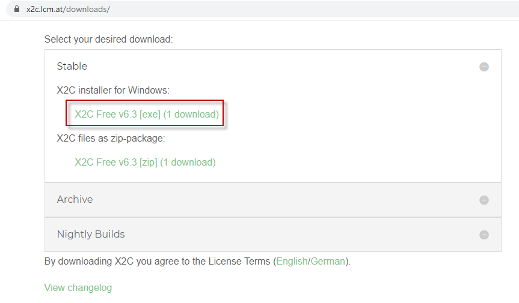
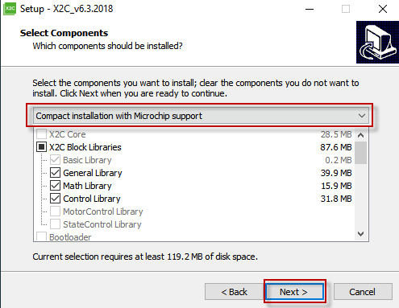

Installing X2C Library
Pre-requisites
- MPLAB® X IDE v5.40 or above
- XC32 v2.41 or above
- MPLAB Harmony Configurator Plugin in MPLAB X
- Scilab v5.5.2
- MPLAB Harmony X2C Remote Package
Install X2C Library
-
Visit this link to download X2C v6.3 or above. 
-
Run the X2C Installer and follow the instructions
-
At “Select Components” menu, select “Compact Installation with Microchip Support” and click “Next” 
-
Certain library files from X2C are required to be copied to your local MPLAB Harmony 3 X2C installation folder. X2C Installer can do this task, transparent to the user, as long as the user provides the local Harmony 3 installation path as shown below. This step would copy the required library files at <harmony 3 directory>\x2c_installer_files.
NOTE: This is a important step which adds Scilab/Xcos + X2C model based development support in MPLAB Harmony 3 environment

- Follow the rest of the self explanatory installation instructions to complete the installation of X2C.
- X2C Installer will also download and install the requisite version of Scilab/Xcos (if not already installed)